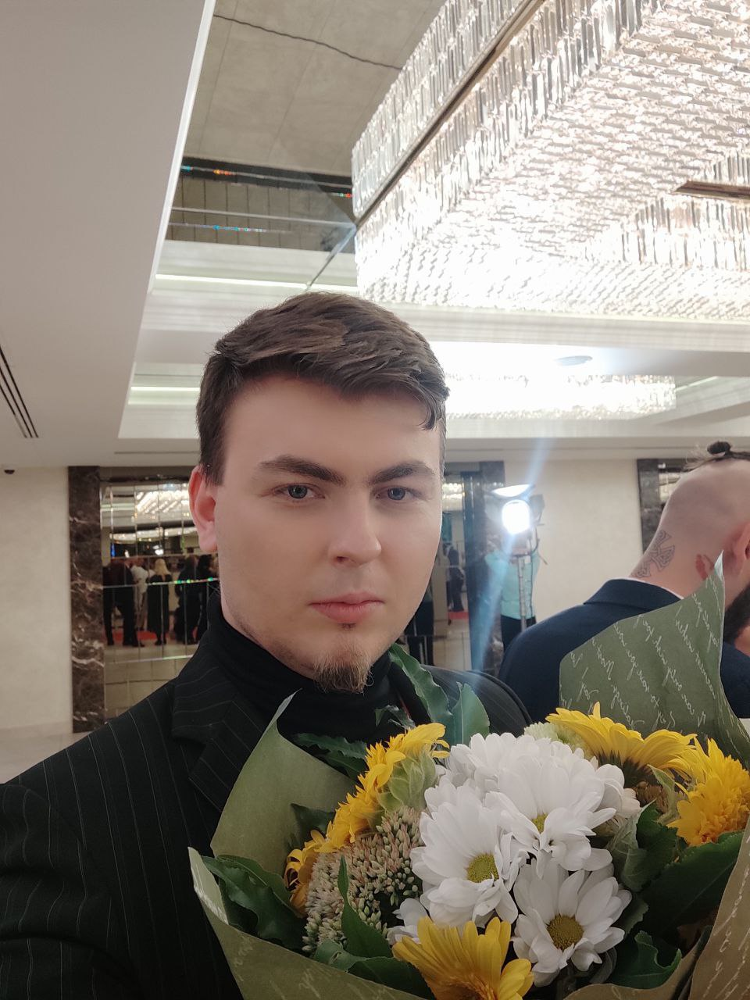
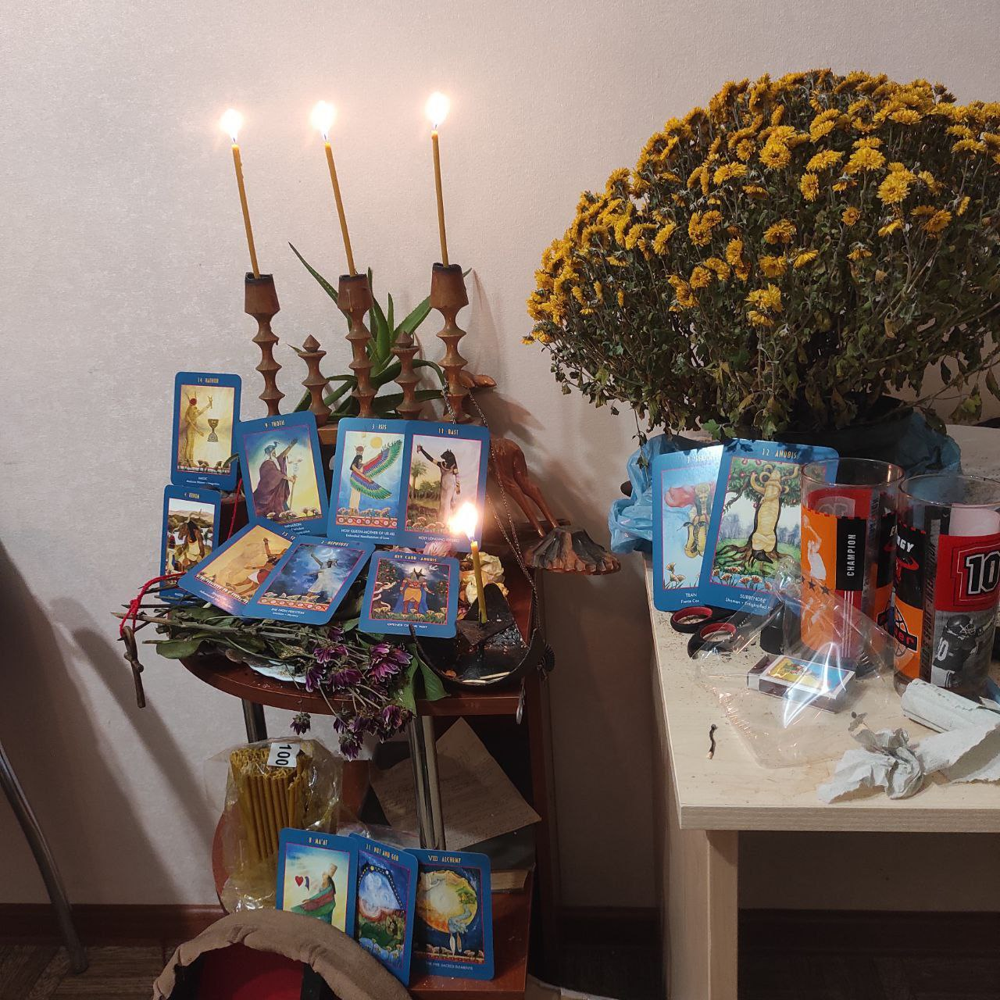
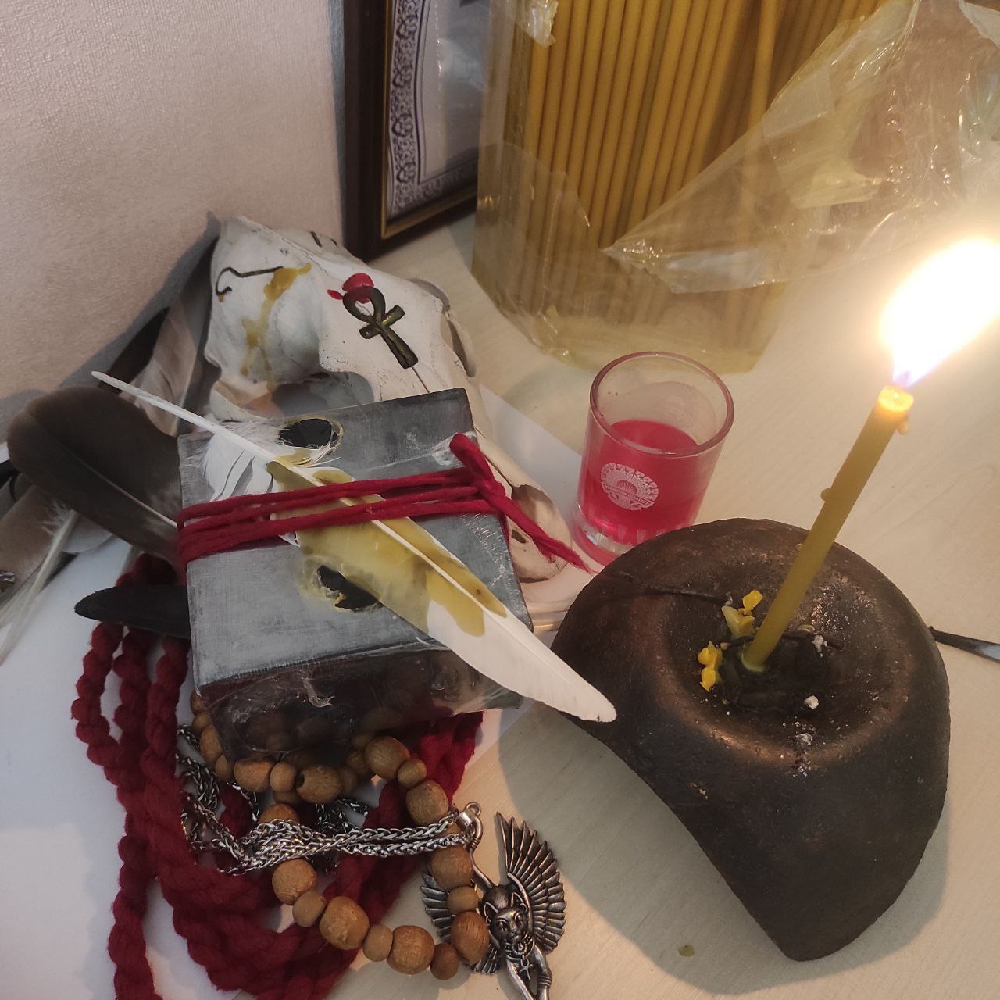
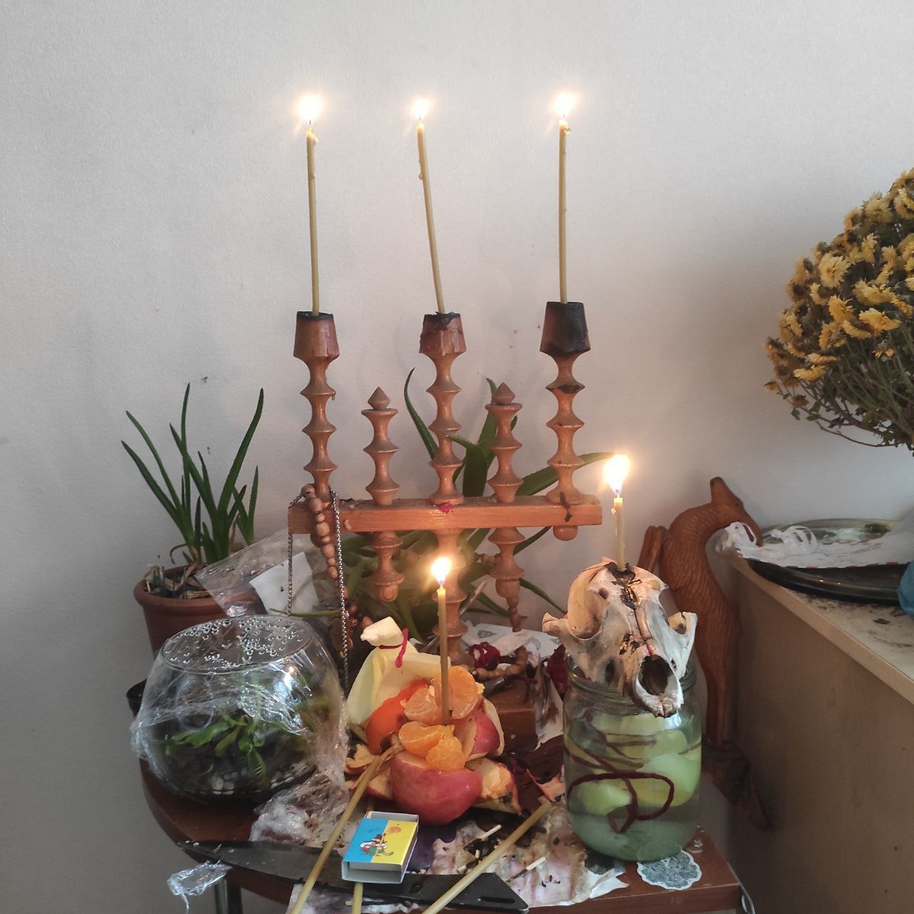
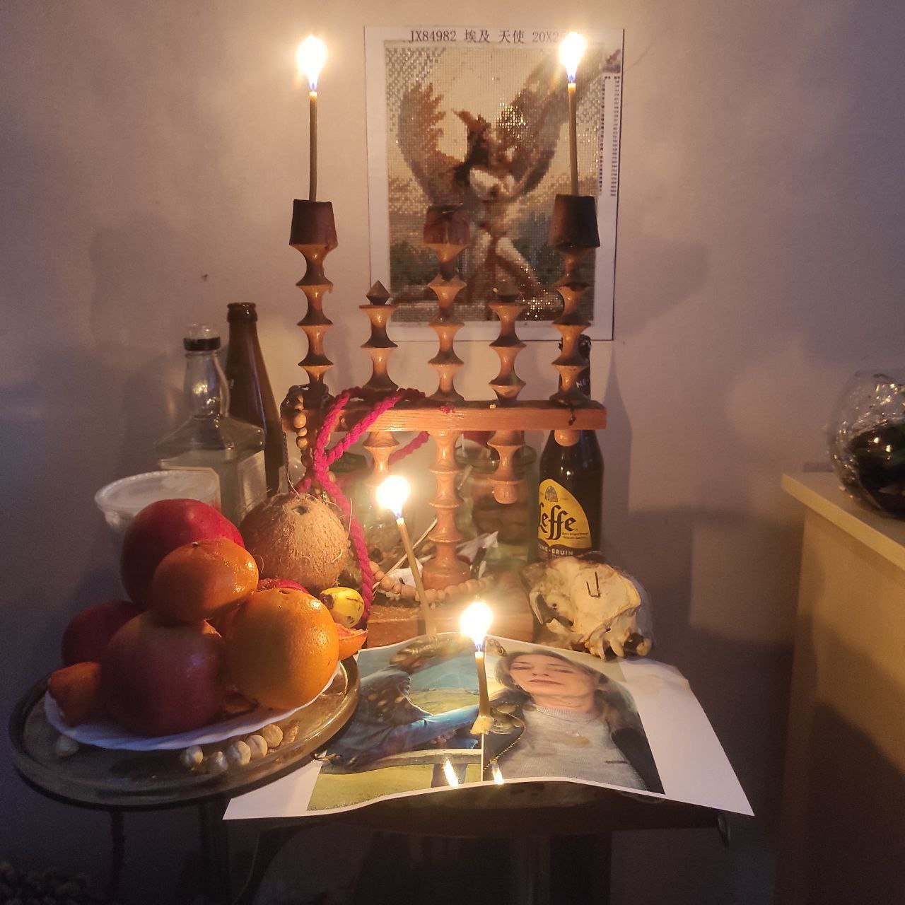
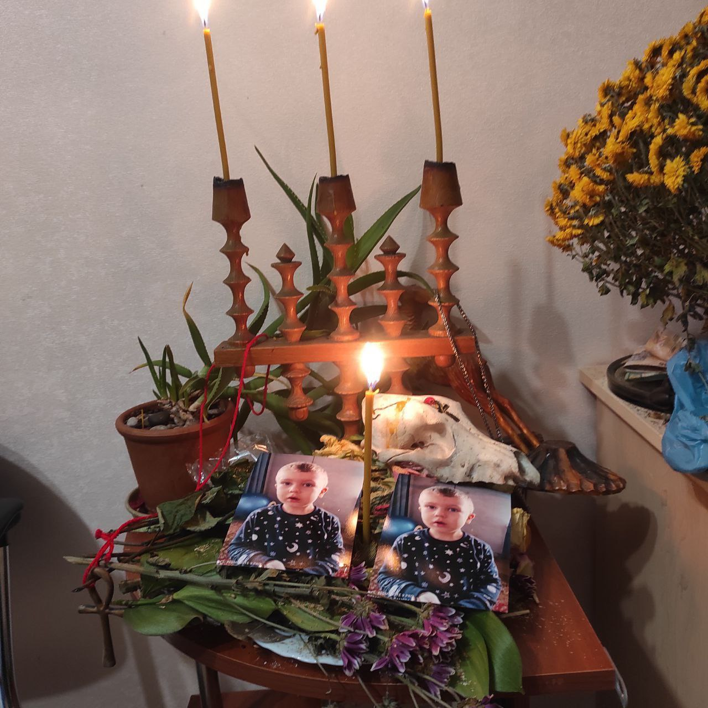
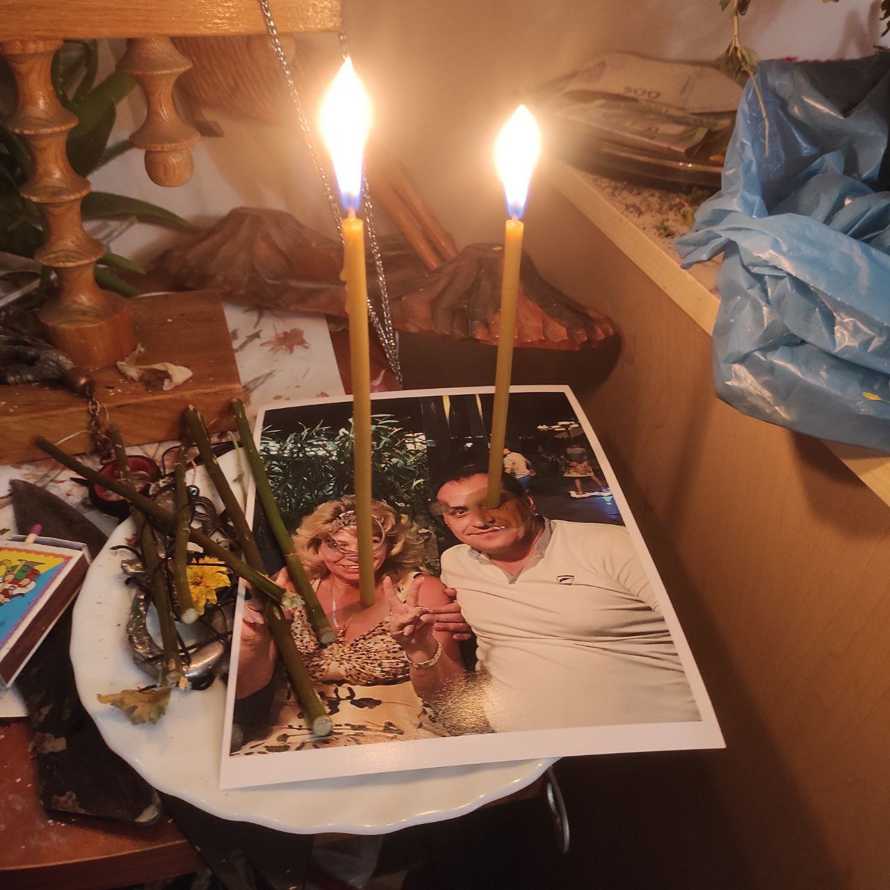

- Я отримав здібності при народженні, коли народився мертвонародженим. З п'яти років бачив духів і проводив багато часу у лісі, мені тоді здавалося це уявою та фантазією, але навіть тоді відбувалися дивні незрозумілі речі, духи мені допомагали у небезпечних ситуаціях вижити, я відчував любов та підтримку від них.
- З 8 років ходив до протестантської церкви та вивчав християнство. У цей період в життя увійшли відчуття тонкого світу.
- У 13 років я вперше побачив мертвого, який вийшов зі мною на контакт і моє життя почало координально змінюватися
- У 14 років я провів свій перший ритуал, я знав, що і як треба робити, але ні разу не читав на той момент ніякої магічної літератури, заговорив амулет, який приносив його власникові успіх. Після першого вдалого ритуалу, став практикуватися з камінням і свічками, магією крові, почав проводити більш усвідомлені ритуали, але все одно ставився до всього скептично і дивувався тому, що я роблю реально працює.
- Тому вступив на факультет радіофізики і паралельно навчався гіпнозу, я дуже хотів допомагати людям не тільки магічно, а й психотерапевтично, а так само зрозуміти, чому те що роблю я працює, але багато хто вважає це вигадкою та обманом.
У 20 років у мене загострилися видіння та чуття, став займатися усвідомленими снами, шаманізмом, вивчати демонологію, практикувати різні магічні течії.
У 23 роки я нарешті отримав перші відповіді та став на шлях Жреця, коли Боги вийшли на зв'язок і показали мені, що я пов'язаний із зіркою Сіріус та душами, які приходять у цей світ, щоб допомагати людям усвідомлювати свою місію і духовно рости. У цьому віці став активно практикувати цілісність, вивчати медицину
У 25 років приступив до набору учнів та послідовників.
Моя допомога та послуги:
Любовні роботи
- Ритуал на неможливість зради партнера - 10 000 грн або 350 доларів
- Розпал почутів - 5000 грн або 200 доларів
- Прив'язка - 12 000 грн або 400 доларів
- Приворотні роботи - від 15 000 грн або від 500 доларів
Роботи на чистку від негативу
- Проста чистка на відновлення емоційного стану. Разова - 1000 грн або 50 доларів
- Раз у неділю протягом місяця проводити чистку емоційних каналів, прибирати побутові конфлікти та розсварки - 5000 грн або 250 доларів
Захисні роботи
- Роботи на відведення від небезпеки, від чужих магічних втручань та печальних випадковостей - від 5000 грн або 250 доларів
Роботи на справедливість
- Робота на покарання кривдників та повернення втраченого - 6000 грн або 300 доларів
Порчі
- Порчі та диструктивні види робіт від 1000 доларів
Навчання
- Навчання магії - 14 занять, ціна курсу - 500 доларів
- Навчання таро - 12 занять, ціна курсу - 250 доларів
Дещо з моїх робіт
Звернення до Богів Єгипту, за допомогою - клієнту.

Ритуал.

Амулет - притягує увагу чоловіків та прикріпленний дух сонця на виповнення бажань.

Повернення боргів та захист людини яка постраждала від шахраїв.

Підведення партнерів до весілля.

Захист дитини. відведення хвороб. Роботи для дітей - безкоштовно.

Повернення чоловіка у сім'ю. Чистка, розпал почутів.
